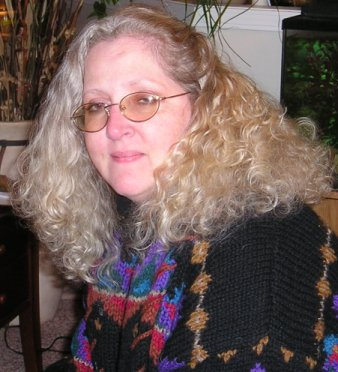
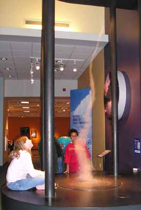

About me!I was born in White Plains, NY in May 1960 where my parents christened me Robin Leigh, and grew up in New City, NY. I grew up loving painting and drawing. Most of what I know has been self-taught and instinctual. I am continually learning new things and expressing myself creatively. I use whatever tools that might be at hand, be it the written word, a drawing or a mess of oil paints or watercolors, and even the computer. Creating websites and graphic designs are the latest forms of expression that I'm using! I don't think I could live a life without art in some form or another.
|
 |
||||||
I graduated from Mercy College with a BS in Business Administration, moved to Connecticut and birthed two children. Divorced, remarried and produced one more child, and ended up divorcing a second time. After my second marriage ended, I found that turned out to be the catalyst for my awakening, rediscovering my creative side which had been put down for too many years. I have been enjoying rediscovering my creative spirit and learning exactly who and what I am. It is a lifelong process, that's for sure!
|
|||||||
 (roll mouse over image) |
|||||||
I currently live in North Carolina with my youngest daughter. I look forward to exploring a lot of new creative avenues along with working and playing, being a parent and a child, teacher and student, friend and lover, writer and artist, creator and destroyer only to create again - and that just about sums up my life in general in almost ten words or less! All the positive and negative experiences in my life do combine to make it an incredibly enriching experience. I have found that life is really a combination of yin and yang, life and dark - day and nights! Without one, the other would not exist. It is my challenge and lesson in this life to learn how to combine the two, embrace both sides into one complete unit. |
|||||||
Now.. someone remind me that I said this when I get frustrated that things are not going my way!!! It is all food for thought, and for now I fill my life with a little of this, a little of that, a lot of everything and some of nothing. I enjoy having fun with words! Love and light to you all!
|
|||||||